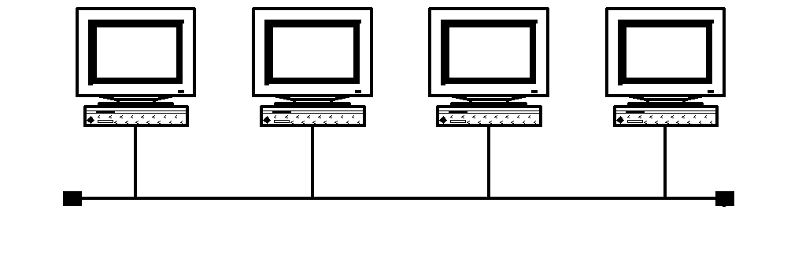
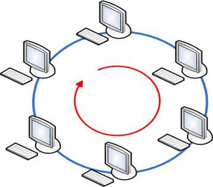
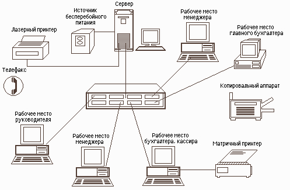
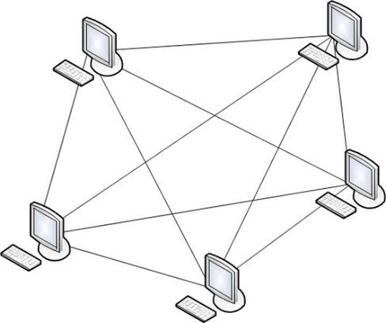
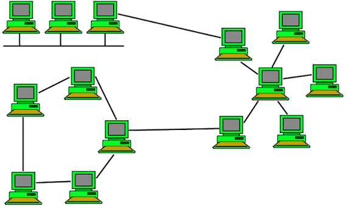

1. Понятие и назначение компьютерной сети
Компьютерная сеть представляет собой совокупность вычислительных устройств — компьютеров, серверов, смартфонов, принтеров и иного оборудования, — соединённых между собой кабельными линиями или средствами радиосвязи и обменивающихся данными. Объединение устройств в единую систему позволяет пользователям получать общий доступ к аппаратным и программным ресурсам, а также организовывать оперативный обмен информацией между абонентами.
Основным назначением сети является совместное использование ресурсов и передача данных. Практически все современные предприятия организуют свою работу на базе компьютерных сетей, что обеспечивает согласованную деятельность сотрудников, доступ к общим базам данных, сетевым принтерам, хранилищам и сервисам сети Интернет.
Примеры применения сетей
Компьютерные сети находят применение в самых разных сферах деятельности. Ниже приведены типичные сценарии использования сетей в организациях и повседневной жизни.
| Сфера применения | Пример использования |
|---|---|
| Корпоративный офис | работники печатают на общем сетевом принтере, получают доступ к общим базам данных и внутреннему порталу |
| Образование | студенты и преподаватели используют электронную библиотеку, систему дистанционного обучения и общие хранилища курсов |
| Медицина | медицинский персонал получает доступ к электронным картам пациентов из разных отделений; нательные датчики (BAN) передают показания в режиме реального времени |
| Торговля | кассы и складские терминалы объединены в единую сеть для учёта продаж и остатков |
| Дистанционная работа | сотрудник через VPN-канал подключается к офисным ресурсам из дома |
| Домашнее использование | устройства умного дома, медиа-центр, интернет-телефония и потоковое воспроизведение видео |
2. Компоненты и структура сети
Для описания состава сети принято разделять её элементы на три группы: оконечные узлы, промежуточные устройства и среды передачи данных.
Оконечные узлы
Оконечными узлами называют устройства, которые передают и принимают данные: персональные компьютеры, серверы, телефоны, планшеты, сетевые накопители. Именно на этих узлах начинается и завершается обработка информации.
Промежуточные устройства
Промежуточные устройства соединяют оконечные узлы между собой и обеспечивают передачу данных по нужному маршруту. К ним относятся коммутаторы, концентраторы, маршрутизаторы, модемы и точки беспроводного доступа. Сетевая карта (NIC) подключает устройство к сети; коммутатор объединяет устройства внутри локальной сети; маршрутизатор управляет передачей данных между различными сетями.
Среды передачи данных
Среда передачи данных — это физическая или логическая среда, в которой распространяется сигнал. По медным кабелям данные передаются электрическими сигналами, по оптоволоконным линиям — световыми импульсами, в беспроводных сетях — радиоволнами. Выбор среды определяет скорость, надёжность и дальность связи.
Сетевое оборудование и его назначение
Для построения сети применяется специализированное оборудование, каждое устройство которого выполняет определённую функцию на своём уровне модели OSI. Ниже приведено описание основных видов сетевого оборудования.
| Оборудование | Назначение |
|---|---|
| Сетевая карта (NIC) | подключает устройство к сети, служит интерфейсом между компьютером и средой передачи данных |
| Коммутатор (switch) | соединяет узлы внутри локальной сети, передаёт данные между подключёнными устройствами по MAC-адресам |
| Концентратор (hub) | устаревший узел, просто транслирует сигнал всем подключённым устройствам |
| Маршрутизатор (router) | управляет передачей данных между различными сетями, выбирает оптимальный маршрут по IP-адресам |
| Модем | преобразует цифровые сигналы компьютера в сигналы линии связи и обратно (обеспечивает выход в Интернет) |
| Точка доступа (Access Point) | обеспечивает беспроводное подключение устройств (Wi-Fi) к локальной сети |
| Сервер | предоставляет сетевые ресурсы и услуги другим устройствам (базы данных, файловые хранилища, приложения) |
3. Классификация сетей по охвату территории
Сети классифицируют по множеству признаков; одним из ключевых является территориальный охват. Различают персональные, локальные, кампусные, городские и глобальные сети.
| Тип | Аббревиатура | Охват | Пример |
|---|---|---|---|
| Персональная сеть | PAN | личные устройства пользователя (до 30 м) | смартфон, наушники, ноутбук |
| Локальная сеть | LAN | здание, офис, квартира | офисная сеть, домашний Wi-Fi |
| Кампусная сеть | CAN | несколько зданий (кампус, больница) | учебные корпуса университета |
| Городская сеть | MAN | территория города или региона | городская оптоволоконная магистраль |
| Глобальная сеть | WAN | страны и континенты | сеть Интернет |
| Виртуальная частная сеть | VPN | защищённый канал поверх физической сети | удалённый доступ сотрудника к офису |
Локальные сети (LAN) охватывают небольшие территории — офисы, школы, дома — и обеспечивают высокую скорость передачи данных на коротких расстояниях. Глобальные сети (WAN) объединяют абонентов на больших расстояниях, используя оптоволоконные линии, спутниковые каналы и иные магистрали; крупнейшей глобальной сетью является Интернет. Городские сети (MAN) занимают промежуточное положение и охватывают территорию города. Виртуальная частная сеть (VPN) создаёт защищённый виртуальный канал между клиентом и сервером поверх физической сети, применяя шифрование для защиты данных.
4. Топологии компьютерных сетей
Топология сети — это схема соединения устройств внутри сети. Выбор топологии напрямую влияет на характеристики сети: отказоустойчивость, скорость обмена данными, стоимость и сложность монтажа.
Шина
Все компьютеры подключаются к единому кабелю-шине через соединительные элементы. Концы шины снабжены терминаторами, препятствующими отражению сигнала. Преимуществами являются простота монтажа и экономия кабеля; недостатками — снижение скорости при росте числа станций и потеря связи всей сети при повреждении шины.

Кольцо
Каждое устройство соединяется с двумя соседними, образуя замкнутое кольцо, по которому сигнал передаётся в одном направлении, а каждый узел выполняет роль ретранслятора. Для повышения отказоустойчивости применяют двойное кольцо. При повреждении кабеля кольцо размыкается и сеть перестаёт функционировать.

Звезда
Все устройства подключаются к центральному узлу — коммутатору или концентратору, который выступает в роли ретранслятора. При обрыве кабеля из сети выпадает только одно устройство, однако выход из строя центрального узла парализует всю сеть. Звезда широко применяется в современных локальных сетях.

Многосвязная (полносвязная) топология
Устройства соединяются напрямую друг с другом, что обеспечивает высокую отказоустойчивость и скорость обмена данными: выход из строя одного узла не влияет на остальные. Однако из-за высокой стоимости такая топология применяется редко — преимущественно на стратегически важных объектах.

Смешанная (гибридная) топология
Комбинирует несколько видов топологий и имеет древовидную структуру. Это наиболее распространённый и отказоустойчивый вариант, используемый в средних и крупных организациях: при обрыве на одном участке остальные независимые фрагменты продолжают работать.

5. Сетевые протоколы и модель OSI
Для передачи информации в сети используются протоколы — стандарты, определяющие правила обмена данными между устройствами. Чтобы упорядочить взаимодействие, разработана эталонная модель взаимодействия открытых систем OSI, состоящая из семи уровней. Каждый уровень решает собственный круг задач и обслуживает уровни выше и ниже.
| № | Уровень | Функции | Примеры |
|---|---|---|---|
| 7 | Прикладной | работа сетевых приложений | HTTP, FTP, электронная почта |
| 6 | Представления | кодирование, сжатие, шифрование | ASCII, JPEG, SSL |
| 5 | Сеансовый | установление и управление сеансом | управление соединением |
| 4 | Транспортный | надёжная доставка данных, порты | TCP, UDP |
| 3 | Сетевой | логическая адресация, маршрутизация | IP, маршрутизаторы |
| 2 | Канальный | адресация в локальной сети, контроль ошибок | Ethernet, MAC-адреса |
| 1 | Физический | передача бит через среду | кабели, радиосигналы |
При передаче данных от приложения к устройству информация проходит сверху вниз по уровням, на каждом из которых добавляется свой заголовок — этот процесс называется инкапсуляцией. Принимающее устройство проделывает обратный путь снизу вверх, снимая заголовки, — деинкапсуляцией. Данные на разных уровнях называют по-разному: на транспортном — сегментами, на сетевом — пакетами, на канальном — кадрами.
Следует отметить, что модель OSI в настоящее время используется главным образом в учебных целях; фактическим стандартом организации сетей выступает стек протоколов TCP/IP.
6. Стек протоколов TCP/IP
Стек TCP/IP является основой сети Интернет и объединяет семейство протоколов, отвечающих за адресацию и передачу данных. В отличие от семиуровневой модели OSI, стек TCP/IP содержит меньше уровней: прикладной, транспортный, интернет-уровень (сетевой) и уровень сетевого доступа. Три верхних уровня OSI здесь объединены в один прикладной, а канальный и физический — в уровень сетевого доступа.
Ключевые протоколы стека: IP (Internet Protocol) — логическая адресация и маршрутизация пакетов; TCP (Transmission Control Protocol) — надёжная передача данных с установлением соединения и контролем доставки; UDP (User Datagram Protocol) — быстрая передача без установления соединения; HTTP/HTTPS — передача веб-данных; FTP — передача файлов; SMTP, IMAP, POP3 — работа с электронной почтой.
7. Адресация устройств в сети
Для того чтобы данные дошли до нужного получателя, каждое устройство в сети должно иметь адрес. Используется два основных типа адресов: физический и логический.
Физический (MAC) адрес присваивается сетевому устройству на заводе-изготовителе и используется для адресации в пределах локальной сети. Логический (IP) адрес назначается устройству, чтобы идентифицировать его в сети; классический формат IPv4 представляет собой четыре числа, разделённые точками, например 192.168.1.1. Для связи между разными сетями применяется маршрутизация на основе IP-адресов.
Поскольку человеку запоминать числовые адреса сложно, используется система доменных имён (DNS), которая преобразует удобные имена, например «google.com», в соответствующие IP-адреса.
8. Заключение
Принципы работы компьютерных сетей образуют фундамент современных информационных технологий. Изученные понятия — компоненты сети, классификация по охвату, топологии, протоколы и модели, а также адресация — позволяют понимать, каким образом данные передаются между устройствами и как организовано взаимодействие в глобальной сети Интернет. Знание этих основ необходимо для дальнейшего изучения сетевых технологий, администрирования и разработки распределённых систем.
Развитие сетевых технологий продолжается: повышаются скорости передачи, совершенствуются протоколы и повышается надёжность и безопасность сетей, что определяет актуальность рассмотренной темы.
9. Расшифровки сокращений и определения
В тексте лекции сокращения и ключевые термины выделены подчёркиванием пунктиром и раскрываются при наведении курсора: появится окно с расшифровкой или определением соответствующего понятия.
Примечание. Если окно не отображается, воспользуйтесь настольной версией браузера либо перейдите по ссылкам в разделе «Источники», где понятия раскрываются подробно.
10. Домашнее задание
Изучить принципы организации компьютерных сетей: виды сетей (локальные и глобальные), топологии и современную структуру сети. Для закрепления материала составьте схему классификации сетей и подготовьте письменные ответы на контрольные вопросы.
Контрольные вопросы
- Что называется компьютерной сетью и каково её основное назначение?
- Какие виды сетей выделяют по охвату территории? Приведите примеры каждого вида.
- Чем локальная сеть (LAN) отличается от глобальной сети (WAN)? Укажите не менее трёх отличий.
- Назовите основные топологии сетей и охарактеризуйте достоинства и недостатки каждой из них.
- Что представляет собой топология «звезда» и где она применяется?
- Какие компоненты входят в состав сети и какую роль выполняет каждое устройство?
- Чем физическая топология отличается от логической?
- Для чего служит модель OSI и из каких уровней она состоит?
- В чём различие между протоколами TCP и UDP?
- Что такое IP-адрес и MAC-адрес, чем они различаются?
- Какую функцию выполняет система доменных имён (DNS)?
- Какие устройства относятся к оконечным узлам, а какие — к промежуточным?
- Что такое виртуальная частная сеть (VPN) и для чего она применяется?
- Каковы функции канального и сетевого уровней модели OSI?
- Опишите процесс передачи данных от приложения получателю (инкапсуляцию).
11. Тест для самопроверки
Пройти интерактивный тест из 15 вопросов по материалам лекции. После выбора каждого ответа выводится пояснение, а в конце — итоговый результат.
Источники
Материал лекции подготовлен на основе следующих публикаций: